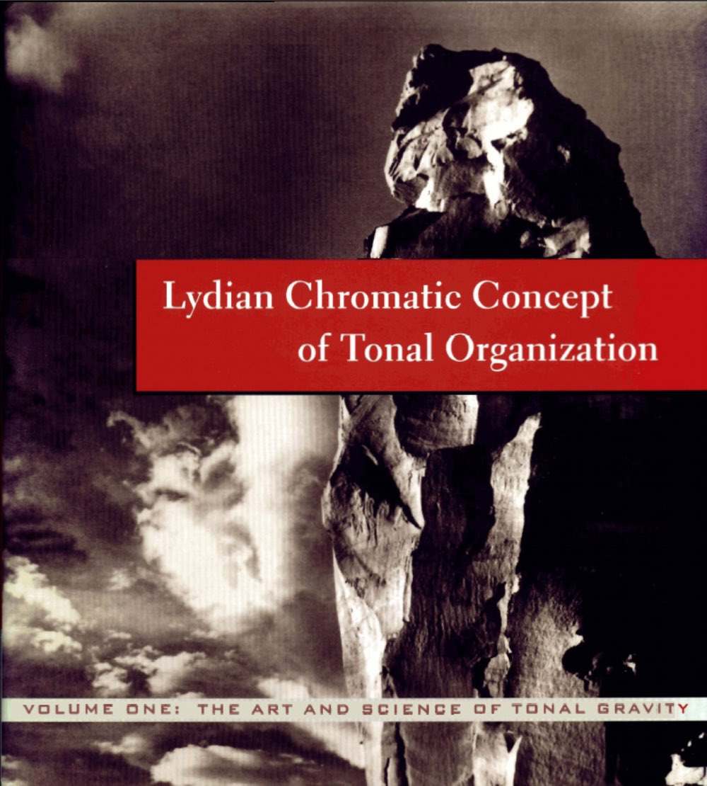

这次介绍的是名为“利底亚阶概念（Lydian Chromatic Concept，简称 LCC）”的理论。这是由爵士作曲家兼音乐理论家乔治·罗素（George Russell）在1953年出版的著作中所阐述的、主要以爵士乐为目标对象的特殊理论。

 1. 什么是 LCC
1. 什么是 LCC
继上一回的“中心轴系统”之后，本节同样是由理论家提出的一套特殊理论。“中心轴系统”纯粹是为了分析巴托克的作品而提出的限定性理论，同样地，这次的理论也不同于能够全盘套用于现行流行音乐的普适理论。因此，我们先简要介绍一下围绕该理论的时代背景以及作者本人的背景。
当时爵士乐的状况
20世纪40年代比博普（Bebop）蓬勃发展，关于“伴随和弦进行进行即兴演奏”这一风格，在那十年间已基本走向成熟。
随后在20世纪60年代，模态爵士（Modal Jazz）和自由爵士（Free Jazz）等全新风格相继登场……
……这就是现代爵士乐的大致脉络演进，而 LCC 问世的1953年，正好处在两者的夹缝之中，是一个典型的过渡期。出身于爵士鼓手、兼任作曲家与音乐理论家的乔治·罗素，早在20世纪40年代与迈尔斯·戴维斯（Miles Davis）的交谈中便获得了灵感，从而构想出了 LCC 这一理论体系。
Russell’s path to his theoretical magnum opus was charged by an encounter in the first half of 1945 with Miles Davis, who answered Russell’s question about his musical goals by stating that he wanted “to learn [to play] all the changes (chords)” (Russell [1953] 2001, 10). Davis already possessed considerable harmonic knowledge at the time; he was performing in various New York jazz venues and had famously attended Juilliard the year before. His “all” in “all the changes” therefore points to harmonic knowledge that exceeds Western art music theory and bebop; it expresses a desire to relate any pitch to any harmony.
促使罗素走向其代表性理论巨著的契机，是1945年上半年与迈尔斯·戴维斯的相遇。当罗素询问其音乐目标时，迈尔斯回答说他想“学会[演奏]所有的进行（和弦）”（Russell [1953] 2001, p.10）。 当时的戴维斯已经掌握了相当丰富的和声知识，活跃在纽约各大爵士演出场所，并在前一年就读于著名的茱莉亚音乐学院。因此，在这一语境中的“所有”一词，指向的是超越西方艺术音乐理论与比博普的和声知识，也就是渴望将任意音符与任意和声联系起来。
Hannaford, Marc E. (2021) Fugitive Music Theory and George Russell’s Theory of Tonal Gravity (pp.53-54).
据称，他创立的 LCC 后来确实对迈尔斯·戴维斯产生了深远的影响。乔治·罗素本人也作为作曲家身体力行地实践了这一理论，其在1985年发行的专辑《The African Game》还获得了次年第28届格莱美奖两项爵士类别的提名。
绝大多数和弦与音阶理论都是“实践在先，对其总结归纳后形成理论”的顺序诞生的；但 LCC 却是为了超越传统的西方音乐与比博普而有意识地构想出来的、可以说是“人造的音乐理论”。因此其基调十分类似于勋伯格等20世纪现代音乐家所做的探索尝试。实际上在《Event V》中的钢琴部分，就交织出了宛如现代音乐般奇妙不可思议的和声。让我们基于一种与现有惯例截然不同的全新构想来建立理论吧——这样一来，必定能创造出前所未闻的新音乐——。
在理解这一前提的基础之上，我们来进入正题。不过必须提前声明的是，仅凭这一篇文章所能介绍的内容是极其有限的。为了讲解通用和弦音阶理论的基础，我们前前后后花了整整9篇文章；想要把比那复杂得多的 LCC 浓缩成简短篇幅是绝不可能的。请将本文视为接触 LCC 的契机、以了解其大致概要为目的的文章。
2. 利底亚音阶与统一性
那么，与传统惯例截然不同的构想究竟是什么？简而言之，就是相比于自然大调音阶（Major Scale），利底亚音阶（Lydian Scale）更为本源这一核心思想。

将这种利底亚音阶重新理解为比大调音阶更具音乐统一性（Unity）的存在，正是 LCC 的起点。这显然有悖于以大调音阶为基础的西方音乐传统惯例与实际情况；但正因为敢于脱离惯例，才能够构建出一套创造有别于传统音乐的新和声的理论体系。事实上在爵士乐中，由于利底亚音阶不存在回避音（Avoid Note），在不少场景下人们更倾向于选择利底亚而非伊奥尼亚（自然大调），选择多利亚而非爱奥利亚。作为爵士乐理论的出发点，这一想法并非毫无道理。
关于统一性（Unity）
在自然大调音阶中，可以说音乐是由其特性音 Fa 所具有的倾向性所塑造的，这一点毫不夸张。LCC 对此作了如下描述：
The major scale represents the horizontal, musical active force forever in the state of resolving to its I major or VI minor TONIC STATION goal (cadence center).
自然大调音阶象征着一种水平向的、音乐性的“主动力量”，永远处于向其 I 级大和弦或 VI 级小和弦的“主音站（Tonic Station）”目标（终止式中心）解决的状态中。
书中将大调音阶奔向主音的欲望形容为“奔向目标的压力（Goal Pressure）”。 如果说大调音阶是“水平的”、“主动的”奔向主音，那么利底亚音阶则拥有“垂直的重力”，作为一种“被动的”力量存在于该处，并具备“自组织的统一性（Self-organized Unity）”。
这种“垂直”与“水平”的对立贯穿于整个 LCC。简单来说，在第VI章和弦音阶理论中讨论的“一个和弦对应一个调式（Mode）”的价值观就是“垂直”的；而“ii-V-I 归根结底都能用 I 级大调音阶弹奏”这种横跨和弦的宏观视角就是“水平”的。
LCC 首先从垂直的理论构建起步，随着论述的深入，水平视角的加入赋予了即兴演奏更大的自由度，从而催生出全新的音响。整体上呈现出这样的发展脉络。
理论依据
话虽如此，在大调音阶占据绝对统治地位的现状下，突然宣称“利底亚更加合适”，任谁都不会轻易信服。因此，在著作的前半部分，花了相当多的篇幅来解释为什么利底亚体现了统一性（Unity）。例如其中列举的解释之一，就是“纯五度连接”。与 C 结合最为紧密的，无疑是 C 上方的纯五度音 G。顺着这种 V-I 的五度关系连续向上延伸，会比 F 先遇到 F♯。

朝向 C 这个领导者串联相连的音是 F♯。因此，用 F♯ 取代 F 的利底亚音阶，是一个向着 C 优美地自然联结、最为统一的音阶——这就是 LCC 的看法。

在开头部分，书中还搬出了许多其他论据来论述利底亚音阶的统一性，但实际上这些对于该理论本身并非最核心的重点，因此这里予以省略。关于这部分内容，我们在本文末尾还会再次提及。
3. 利底亚半音阶
接着，在 LCC 中，将上述的“纯五度串联”进一步发展，构成了涵盖全部12个音的利底亚半音阶（Lydian Chromatic Scale）。

这一按照 I, V, II, VI, III……排列的层级在 LCC 中被称为调性序列（Tonal Order）。该序列可以说体现了各音与 I 音结合紧密程度的强弱。按系统推导，该序列的第8位应当出现 F♯ 音，但由于它与根音是小二度关系，说它与 I 音结合未免过于勉强，因此作为特例被排到了序列的最后一位。
利底亚半音阶不同于普通半音阶之处，就在于它内嵌了这种“序列”的信息。基于这一序列，理论统一探讨了声音是朝着支撑利底亚音阶重力的方向运作，还是朝着脱离重力的方向运作。
在调性序列中排名靠前的被称为“向心（In Going）”，排名靠后的被称为“离心（Out Going）”。虽然表述有些抽象，但大致来说，“向心”赋予声音以“安定、整齐统一”的感觉，而“离心”则赋予声音以“外溢、偏离（Out）”的感觉。这与爵士乐中所说的 Inside / Outside 大体具有相似的含义。
4. 主要音阶（Principal Scales）
接着根据上述序列，从利底亚半音阶中选取音符，构建出总共11个音阶。其中尤为重要的，是7个主要音阶（Principal Scales）。

要阅读本文的后续内容，需要登录。请从侧边栏的登录表单进行登录。会员注册是免费的。


只要记住了刚才的调性序列，这7个音阶就很容易理解了。仅由调性序列前7个音构成的最基础音阶，当然就是“利底亚音阶”。而分别将序列中第8、9、10位的音各替换融入一个而成的音阶，就是“增利底亚音阶（Lydian Augmented）”、“减利底亚音阶（Lydian Diminished）”和“降七音利底亚音阶（Lydian Flat 7th）”。
关于“增利底亚”和“降七音利底亚”，在以旋律小调为主音阶体系中分别对应第III调式和第IV调式；但在 LCC 中，一切都被认为孕育自“利底亚半音阶”。
将第8和第10位音同时融入并去掉 VI 级的音阶就是“辅助增音阶（Auxiliary Augmented）”。融入第8、9、11位音、且是唯一拥有纯四度音程的音阶就是“辅助减音阶（Auxiliary Diminished）”。最后，融入第9、10、12位音的则是“辅助减布鲁斯音阶（Auxiliary Diminished Blues）”。
对于最后这3个音阶，其音程结构是不是让人觉得有些眼熟？实际上这3个音阶在和弦音阶理论中早已有其为人熟知的名字：
| LCC 中的称谓 | 常规称谓 |
|---|---|
| Aux. Augmented | 阶（Wholetone） |
| Aux. Diminished | 减音阶（Diminished） |
| Aux. Diminished Blues | 属减音阶（Dominant Diminished） |
在 CST（和弦音阶理论）中，由于这三者既不源自大调，也不源自旋律小调或和声小调，因此是在靠后的章节中作为补充介绍的。而在 LCC 中，它们却跻身于“七大主要音阶”之列。 把这些明显异于常规、通常被视为“秘密武器/偏门利器”般存在的音阶大胆确立为基础来构建系统，LCC 正是试图以此激发更富拓展性的创造力。
4个水平音阶
在 LCC 中，还辅助性地加入了另外4个音阶，总共以11个音阶作为基石推进系统。其余4个音阶如下：
| LCC 中的称谓 | 常用名称 | 音程结构 |
|---|---|---|
| Major | 自然大调（Major） | I II III IV V VI VII |
| Major Flat 7th | 混合利底亚（Mixolydian） | I II III IV V VI ♭VII |
| Major Augmented 5th | 伊奥尼亚♯5（Ionian ♯5） | I II III IV +V VI VII |
| African-American Blues | 布鲁斯音阶（Blue Note） | I (II) ♭III III IV +IV V VI ♭VII (VII) |
由于这些音阶都包含纯四度（P4）音程，因此被评定为是“水平的”（虽然让人觉得 Auxiliary Diminished 怎么算呢……）。与刚才的“七大主要音阶”不同，它们被视为拥有前述的“奔向目标的压力”、“水平的主动力量”的音阶，关于它们将在后续的章节中详细讨论。
在 LCC 中，主要就是运用这11个音阶（尤其是7个主要音阶）来组织音乐。
5. 寻找对应音阶
接下来，就和和弦音阶理论一样，进入为和弦匹配相应音阶的环节。不过，说到为和弦配置音阶，此前存在着两种方法论。
常规音乐理论的方法
一种是以调的中心（Key Center）为基准来套用调式的方法。

这基本上就是常规音乐理论世界中采用的模式。在这种模式下，并不存在真正意义上的“调式（Mode）”概念，和弦只是与音阶在一种相对分离的状态下共存。无论和弦是什么，音阶的中心都独立存在。在上例中，即便和弦发生改变，调式主音始终都是 C。
这种方式虽然精简便利，但由于依赖于调性，无法应对频繁的转调，且难以产生调式置换（Mode Change）的思维构想。
CST 的方法
因此，在和弦音阶理论（CST）中，提出了以和弦根音为基准来套用调式的方法。

在 CST 中，将调式的中心称为“调式主音（Modal Tonic）”，从而得以脱离“调性主音（Key Tonic）”来独立把握音阶。虽然学习成本较高，但由于不依赖具体调性，不仅内置了每个和弦的引伸音（Tension）与回避音（Avoid Note）信息，还更容易通过调式的置换来拓展创作构想。
然而，LCC 在调式与和弦之间的对应机制，与上述两者皆不相同。
利底亚主音（Lydian Tonic）
在 LCC 中，万事万物皆以利底亚音阶为核心运转。因此 LCC 的思路十分直接：无论面对什么和弦，都以利底亚音阶（或随后的6个主要音阶）作为母体音阶来进行匹配。以 C 大调为例……
例如对于 FΔ，自然匹配 F 利底亚；而对于 CΔ，同样匹配 C 利底亚。

在 C 利底亚中 F 音带有升号（F♯），而在 LCC 看来，这正是最具有统一性的状态，是一种常态。认为这样做可以使人从“必须解决不稳定回避音 F”的紧张压力中解放出来。
那么对于 G7 该怎么办呢？答案是匹配 F 利底亚音阶。确实，F 利底亚全部都是“白键”音，完全能够应对 G7。

关键在于：既非“根音是 G 所以选 G 利底亚”，也非“调是 C 所以选 C 利底亚”。这种选取方式，与常规音乐理论和和弦音阶理论都截然不同。
| 理论体系 | 适用的音阶（调式） | 音阶（调式）的中心 |
|---|---|---|
| 常规理论 | C 自然大调音阶 | C（= 依赖于调） |
| CST | G 混合利底亚（Mixolydian） | G（= 依赖于和弦） |
| LCC | F 利底亚音阶 | F（= 两者皆非） |
LCC 的方法论：就其不依赖于调性而言接近 CST，但就母体音阶的中心独立于和弦本身而言又接近常规理论。它恰如两者的“混血儿”，展现出一种独特的思维逻辑。
LCC 将这种既不同于“调式主音”也不同于“调性主音”的“母体音阶中心”，命名为“利底亚主音（Lydian Tonic）”。

除了大七和弦以外，调式主音与利底亚主音在原则上都是错位的。必须记住每种和弦性质（Quality）对应的这种“错位”，是让人觉得 LCC 难以掌握的一大痛点。而这种“调式主音与利底亚主音之间的音程”，就被称为利底亚主音音程（Lydian Tonic Interval，简称 LTI）。例如在 G7 中，L.T.I. 就是“小七度”或“大二度”。
为 2-5-1-6 配备音阶
这里是一个容易卡关的地方，因此我们再补充几个例子。例如在爵士乐常见的 ii-V-I-vi 进程中，情况如下：

对于 A–7，同样出于规避强倾向性 F 音的目的，为其配置了 C Lydian。果然在爵士乐的语境下，Fa♯ 完全没有任何违和感地存在于 Key C 的调性之内。
在掌握了这种“音阶套用”的阶段，便能够开始进行简单的演奏，这也标志着真正迈出了 LCC 的第一步。 但在这一阶段，人们可能还不太明白究竟为什么要大费周折地这样做。前面介绍的“7个主要音阶”也完全没有派上用场。只有进一步向前探索，LCC 的真正意义才会水落石出。